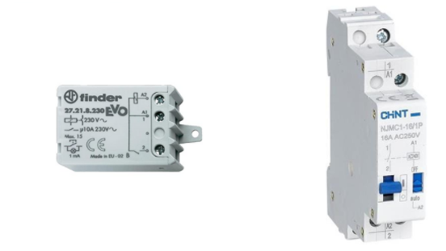

S'anomena telerruptor a un dispositiu de commutació amb comandament electromagnètic que té dues posicions estables (BIESTABLE) i que es accionat per polsos. En un telerruptor, quan s'activa la bobina de l'electroimant, un o mes contactes que inicialment es troben en repòs (estat I) canvien de posició (estat II) i es mantenen en aquesta posició. Si volem que el contactes tornen a la seua posició de repòs (estat I) hem de tornar a activar la bobina del electroimant.